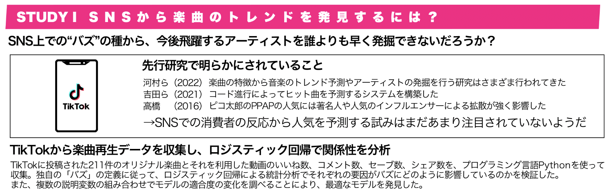
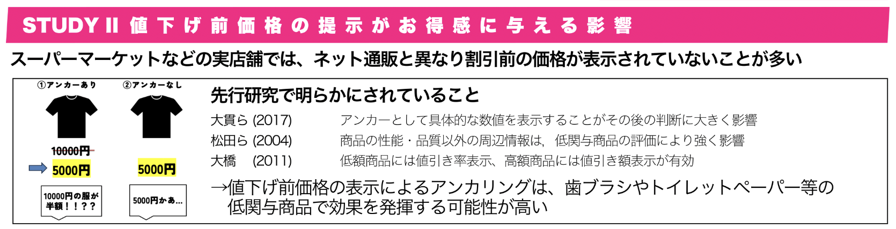

Junichiro Niimi
- 名城大学 経営学部経営学科 准教授
- 理化学研究所 革新知能統合研究センター (RIKEN AIP) 客員研究員
- 名古屋大学大学院経済学研究科 国際政策経済研究センター 共同研究員
- 企業の技術顧問・アドバイザー、音楽・現代アートのお仕事やイベント運営など
深層学習のアーキテクチャや特徴抽出手法の開発およびそれらの行動予測への応用などの研究を行っています。
名城大学経営学部 新美ゼミ
ゼミのイメージ
新美ゼミでは、専門ゼミナールI, IIとして、毎年2, 3年生合同の5-6グループで1年かけて研究を進めます。そこで得られた経験をもとに、専門ゼミナールIIIでは個人単位で卒業研究を進め、卒業論文を作成します。
基本的にはマーケティングを中心としたゼミです。ただし、マーケティング分野で開発されたさまざまな手法は、人間の行動原理を理解することや特定の行動を促進させることなど、いわゆる行動科学 (behavioral science) の幅広い領域を捉えることに活用できます。よって、必ずしもマーケティングに強くこだわったゼミではありません。いろいろなことに幅広く興味を持てる方を歓迎します。
ゼミの連絡はグループウェアSlackを介して行います。SlackへはPC/スマホの公式アプリの利用、もしくはブラウザから https://niimiseminar.slack.com/ にアクセスすることでも閲覧できます。
ゼミのGoogle Drive共有フォルダへのアクセスには、Slack上のリンクから飛ぶか、共有フォルダをマイドライブに追加してください。大学のGoogleアカウントからしかアクセスできないので注意。
ゼミ研究テーマの紹介
研究テーマはここに示すものに限りません。やりたい研究ができるかなど含め、詳しくはオープンゼミやオフィスアワー等で質問してください。
-
防災マーケティングにおける防災意識と性格特性の関係性
どうしても僕らは防災のための準備を怠ってしまう。そもそも、防災意識が低いのはどんな人なのだろうか？あるいは、それを高めるにはどうすればいいのだろうか？そういった防災意識や実態と性格特性の関係性をモデリングした。特定の行動を促進させるという意味での防災マーケティングという分野の研究。

-
動画広告における倍速再生の有効性の検証
倍速広告の有用性について、音楽機材販売企業との共同研究で実際にYouTubeに複数パターンの広告を出稿し、その効果を検証した研究。

-
ソーシャルデータの時系列解析
TikTokでの楽曲利用数とユーザーの反応の関係性を分析し、将来予測モデルを構築した研究。まだ再生数のほとんどない楽曲から、実際に高い確率でバズる楽曲を発見することに成功。
-
最適な値下げ価格提示方法の検討
値下げ前価格の提示によるアンカリング効果を分析した研究。消費財のカテゴリや価格帯と、割引額や割引率の表示方法、その程度の関係性を分析し、たとえば食品等における過度の割引は安全性等の不安につながる可能性などの示唆が得られた。
大学院(修士・博士), PD等
現在、新美研究室では大学院(修士課程・博士課程)、PD等の受け入れは行なっておりません。ただし、研究相談や共同研究等は可能な場合もありますので、関心があればご連絡ください。
Currently, J.Niimi Lab does not accept master’s students, Ph.D. students, or postdoctoral researchers. However, we are open to research discussions or collaborative projects, so please feel free to contact us if interested.